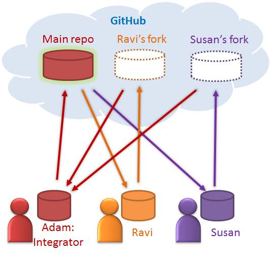

For phases A and B, you only need a personal GitHub account. You are advised to choose a sensible GitHub username
as you are likely to use it for years to come in professional context.
The instructions below are for setting up a GitHub organization for your team, which you should do at the start of
Phase C.
Organization setup
You can create your GitHub account after receiving your team ID. Here are the instructions (
please follow the organization/repo name format closely because we use scripts to download your code.
If the names are not as expected, our scripts will not work):
- One team member (e.g. team leader) should create an organization with the following details:
- Organization name :
CS2103AUG2016-TEAM_ID. e.g. CS2103AUG2016-W09-5C
- Plan: Open Source ($0/month)
- After that, the same person can add members to the organization:
- Create a team called developers to your organization (in addition to the owners team) and give
that team write permission.
- Add your team members to either the owners team or the developers team.
Repo setup
- Create a repo called main under your organization
e.g. cs2103aug2015-w09-5j/main

Issue tracker setup
- When you create a repo, you get an issue tracker for that repo automatically.
- Delete existing labels and add the following labels.
type.epic : A big feature which can be broken down into smaller stories e.g. search
type.story : A user storytype.enhancement: An enhancement to an existing storytype.task : Something that needs to be done, but not a story, bug, or an epic. e.g.
Move
testing code into a new folder)
type.bug : A bugstatus.ongoing : The issue is currently being worked on. note: remove this label
before
closing an issue.
priority.high : Must dopriority.medium : Nice to havepriority.low : Unlikely to do
- Create following milestones
-
V0.0, V0.1, V0.2, V0.3, V0.4, V0.5rc,
V0.5
- You may configure other project settings as you wish. e.g. more labels, more milestones
Guidelines for Task Tracking using the Issue Tracker
In general, use the issue tracker for assigning, scheduling, and tracking ALL project tasks,
including user stories. Update the issue tracker regularly to reflect the current status of the
project.
Recommended practices when using the Issue tracker:
- When you start implementing a story, break it down to tasks. Define reasonable sized, standalone
tasks. A task should be able to done by one person, in a few hours. e.g.
Good: Update class diagram in the project manual for V0.5
Bad (reasons: not a one-person task, not small enough): Write the project manual
- Write a descriptive title for the issue.
e.g. Add support for the 'undo' command to the parser.
- There is no need to break things into VERY small tasks. Keep them as big as possible, but they
should be no bigger than what you are going to assign a single person to
do within a week. So the user story
Implementing parser is too big because it cannot be
done by a single person in a week. However,Implementing parser support for adding of floating tasks is
of
appropriate size.
- Do not track things taken for granted. e.g., 'push code to repo' should not be a task to track.
In the example given under the previous point, it is taken for granted
that the owner will also (a) test the code and (b) push to the repo when it is ready. Those two need
not be tracked as separate tasks.
- Omit unnecessary details. In some cases, the summary/title is enough to describe the task. In
that case, no need to repeat it in the description. There is no need for
well-crafted and detailed descriptions for tasks. A minimal description is enough.
Similarly, labels such as 'priority' can be omitted if you think they don't help you.
- Assign tasks to team members using the 'owner' field. At any point, there should be some ongoing
tasks and some pending tasks against each team member.
- Use status labels to indicate which tasks are completed, which are ongoing, and which are to be
done by next milestone.
- Use milestones to indicate which issues are to be handled for which milestone.
[Optional] A safer workflow using forks and pull requests
The workflow below will reduce the risk of someone breaking the product. It is a bit complicated.
Do spend some time using the GitHub repo in a centralized (easier) way
before you attempt this. If the centralized workflow is good enough for you, there is no need to use
this one.
In this example, Adam is the integrator and only he can push to the main repo. Other team members
create their own 'fork'
on GitHub and push their code to their own fork.

Scenario 1. The integrator adds some new code:
- 1.1: Adam adds some new code, ensures it works, pushes it to the main repo, and informs others.
- 1.2: Others pull from the main repo to get that new piece of code.
Scenario 2. Another member adds some new code:
- 2.1: Ravi implements a new feature in his local repo.
- 2.2: Ravi pulls the latest code from the main repo, merges it with his code, tests his new code
to ensure it works with the latest version of the product, and pushes his
code to his own fork. He then creates a pull
request
to inform Adam that the new code is ready.
- 2.3: Adam pulls from Ravi's fork, merges with existing code, and run the unit tests.
(a) If the tests fail, or if the new code is not up to the standard, he reverts back to the
previous version, effectively rejecting Ravi's code. He adds a comment in the
pull request to say the code has been rejected.
(b) If Ravi's code is working and of acceptable quality, he pushes it to the main repo and closes
the pull request.